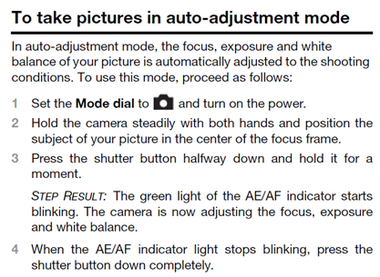

---
# Generated from DITA source
layout: default
title: "What is a topic"
index: "../toc.html"
---
What is a topic
In DITA, all content is chunked into topics. Topics are individual units of information, organized around a single subject or answering a single question. Each topic makes sense on its own and can be authored as a stand-alone piece of content. A topic is considered the smallest information unit and multiple topics can be combined to create bigger information units (like chapters and volumes).
A topic is traditionally composed of a title and some content. That content is built up of structural components, such as the following:
Paragraphs
Tables
Lists (bulleted lists, numbered steps …)
Illustrations
Notes ("Warning!", "Attention!", "Tip" …)
All the structural components of which your content consists are predefined in an information model. Technical writers working on the same project use this information model to ensure that all topics (that make up the final information product) are structured in the same manner.
The following topic answers the question “How do I take pictures in auto-adjustment mode?” It is composed of a title, some introductory sentences and a list of numbered steps.
